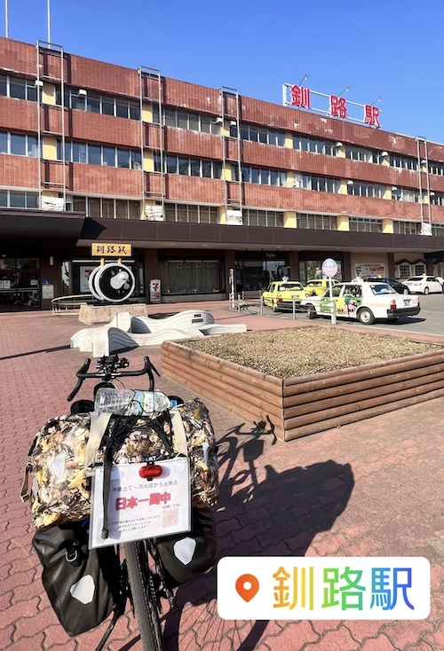

自転車で日本一周旅行するやつ - 2024/05/02 晴れ
TSUBASAが釧路到達
2023年4月に自転車持参で沖縄を出たTSUBASA。大阪に住む姉のもとで準備を整え、4月28日に東京の兄部屋を目指して出発。冬は東京でバイトをして旅の資金を貯め、2024年4月4日に北海道に向け再出発しています。
そんな彼の旅もチャリンカーにとって一番の難所と言われる北海道へ。母から大量に送られてくる熊ニュースに怯えながらも釧路まで到達しました。
自由な旅も、1日平均100km走る体力も本当にうらやましいですね。今しかできないことを全力で楽しんで欲しいと思っています。
インスタで日々の様子を見ることができますので、応援してあげてください。
